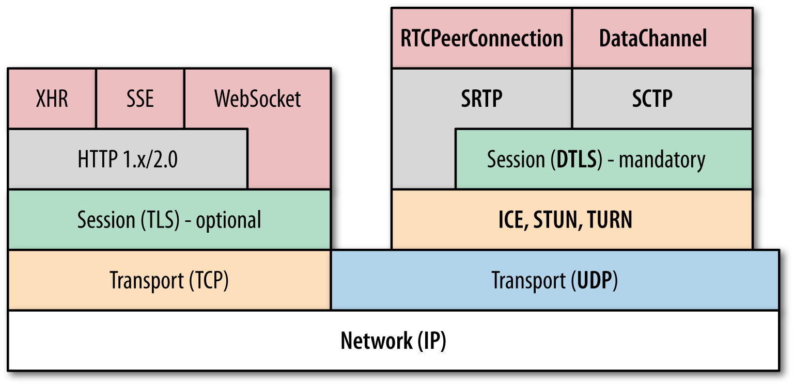

Fuck web 2.0
The Amazing Web!
http://www.nihilogic.dk/labs/wolf/
http://arkt.is/zatacka/


Goddag!
Velkommen til Internett.
Hva skal vi egentlig snakke om i dag?
WebRTC!
Hva er WebRTC?
WebRTC API
- MediaStream: acquisition of audio and video streams
- RTCPeerConnection: communication of audio and video data
- RTCDataChannel: communication of arbitrary application data
WebRTC data protocol stack

Modenhet